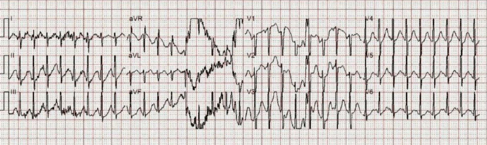
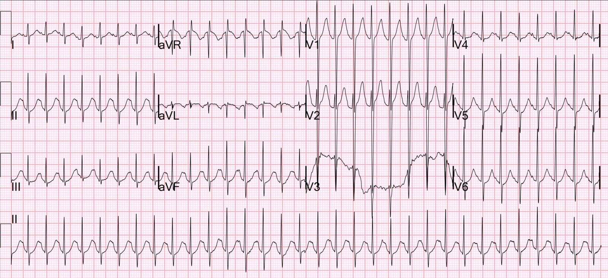
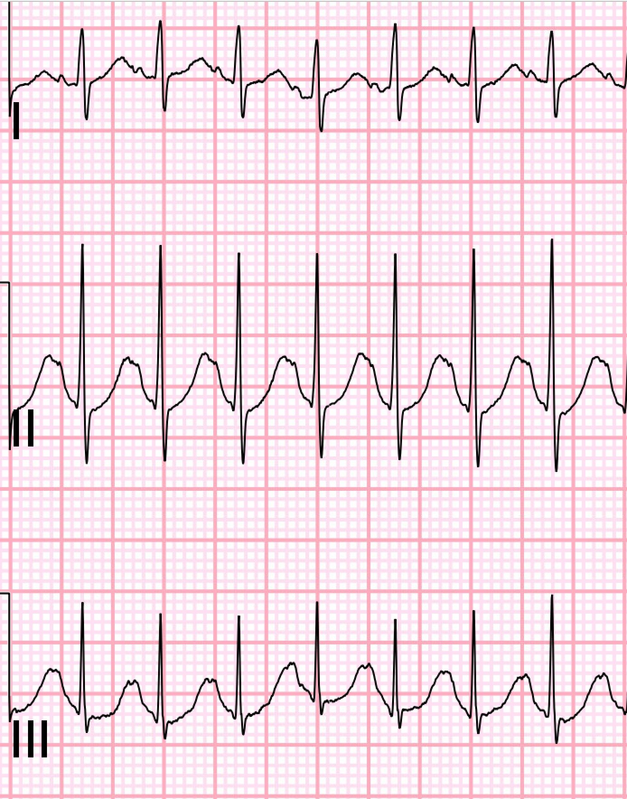
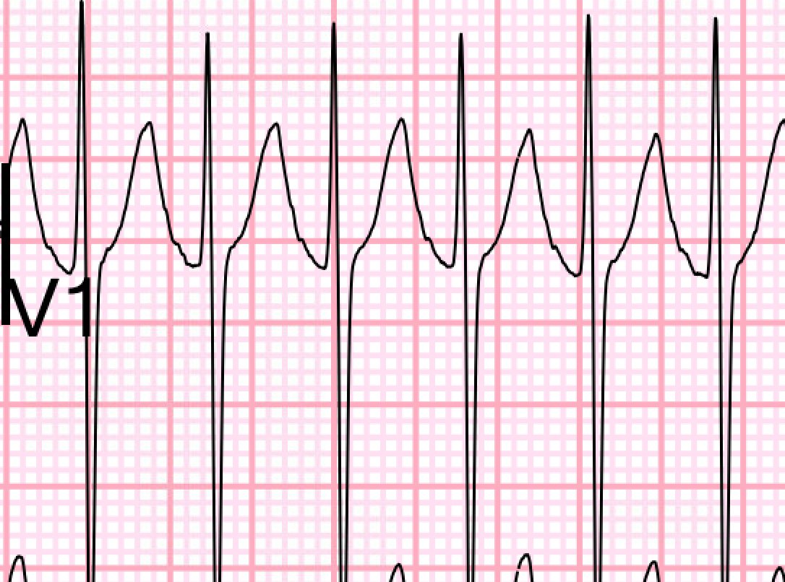
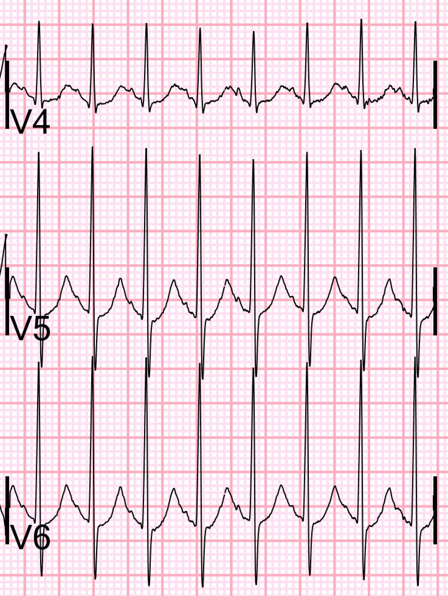
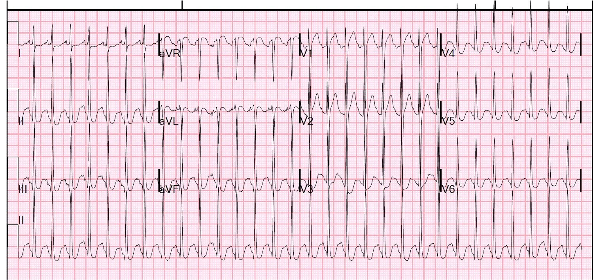
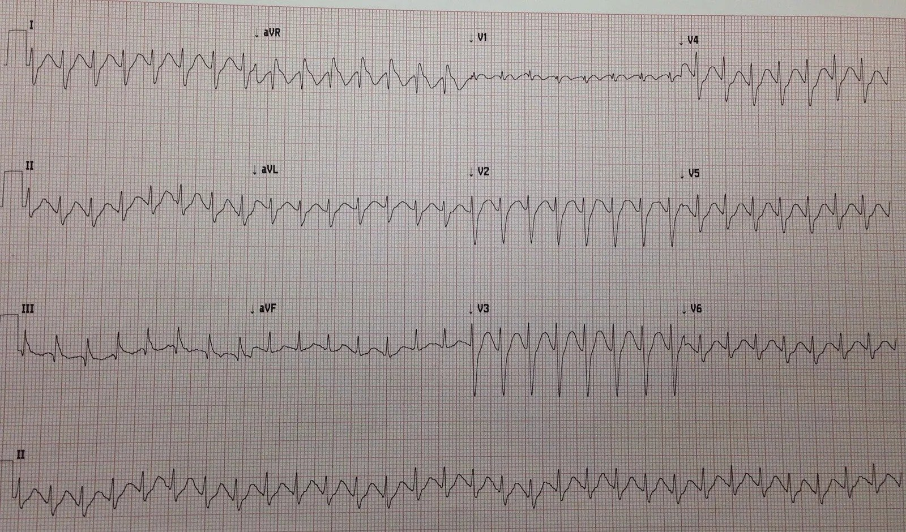
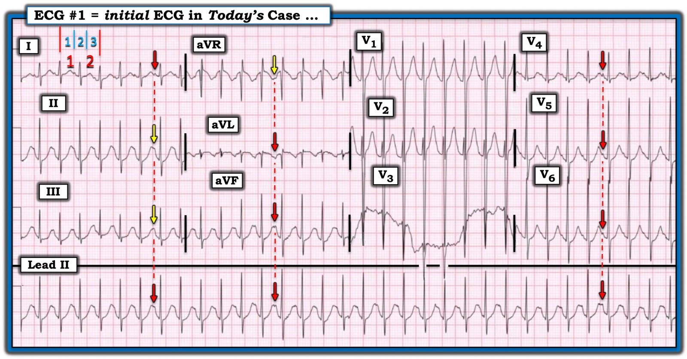

13/08/2025 — Một nam giới ngoài 30 tuổi bị kích động, có nhịp nhanh QRS hẹp đều không cắt được bằng adenosine
Bản dịch tiếng Việt của bài "A 30-something agitated male with a regular narrow complex tachycardia that will not terminate with adenosine" – Dr. Smith’s ECG Blog. Giữ nguyên toàn bộ 8 hình ảnh và 1 video của bản gốc.
Một nam giới ngoài 30 tuổi được đội cấp cứu ngoài viện (EMS) đưa tới để đánh giá tình trạng kích động và nhịp tim nhanh. Theo EMS, bệnh nhân chạy ngoài đường, la hét và đấm vào ô tô. EMS đo mạch của anh ta từ 190-200. Họ đã cho 10 mg droperidol để làm bệnh nhân đủ bình tĩnh mà ghi được điện tâm đồ 12 chuyển đạo.


Bạn nghĩ gì?
Đây là một SVT rất nhanh với tần số khoảng 204 nhịp/phút. Họ đã tiêm adenosine 6 mg nhưng không cắt được nhịp. Sau đó họ tiêm 12 mg adenosine mà không có kết quả. Họ tiêm thêm 12 mg adenosine nữa mà vẫn không cắt được.
Vì sao thất bại?
Bệnh nhân tới khoa cấp cứu (ED) và được ghi một điện tâm đồ khác:


Bạn muốn làm gì?
Đây là SVT với tần số 194. Nhưng hãy nhớ rằng nhịp nhanh xoang là một dạng nhịp nhanh trên thất (SVT). Vì vậy, bất cứ khi nào bạn thấy “SVT”, hãy tìm sóng P, vì có thể nó KHÔNG phải SVT “kịch phát” (PSVT) — tức là AVNRT hoặc AVRT (AVRT do WPW). Cuồng nhĩ hoặc nhịp nhanh nhĩ là 2 SVT khác cần nghĩ tới.
Các bác sĩ ở khoa cấp cứu cho rằng đây là PSVT và tiêm thêm một liều adenosine 12 mg nhưng không cắt được cơn nhịp nhanh.
(Nhân tiện, nếu bạn thực sự nghĩ là PSVT và liều 12 mg thất bại hai lần, bạn có thể thử 18 mg). Nhưng ca này đơn giản hơn thế)
Có sóng P rõ ràng ở nhiều chuyển đạo. Một manh mối khác gợi ý nhịp nhanh xoang là bệnh nhân rất kích động, điều này có thể do quá liều chất cường giao cảm, vốn gây nhịp nhanh xoang.
Nếu chúng ta phóng to các phức bộ, sóng P hiện rõ ở các chuyển đạo I-III:


Chuyển đạo V1:


Và các chuyển đạo V4-6:


Nếu bạn không thấy sóng P khi có SVT, thì các dấu hiệu khác của nhịp nhanh xoang là:
- Chuyển đạo Lewis. Xem bài này về cách ghi chuyển đạo Lewis (có thể thực hiện bằng máy monitor, KHÔNG chỉ bằng điện tâm đồ 12 chuyển đạo):
- Wide Complex Tachycardia. What is the Diagnosis? (Nhịp nhanh QRS rộng. Chẩn đoán là gì?)
- Tần số thay đổi. Các nhịp vào lại như PSVT giữ ở một tần số không đổi. Các nhịp tự động như nhịp nhanh xoang thay đổi theo từng thời điểm.
- Truyền dịch. Thường điều này sẽ làm giảm tần số.
- Nếu bạn nghi ngờ quá liều chất cường giao cảm, hãy cho benzodiazepin.
Ca bệnh tiếp diễn:
Bệnh nhân được truyền dịch và cho benzodiazepin, và tần số giảm dần.
Chức năng tim tốt.
Xét nghiệm sàng lọc ma túy xác nhận có amphetamin và cocain.
Các ca khác có nhịp nhanh xoang bị nhầm thành PSVT:
A young man with tachycardia. Should We Try Adenosine? (Một nam thanh niên nhịp tim nhanh. Có nên thử adenosine không?)


Và ca này:
A Relatively Narrow Complex Tachycardia at a Rate of 180. See what happens when you try to cardiovert sinus tachycardia. (Nhịp nhanh QRS tương đối hẹp với tần số 180. Hãy xem điều gì xảy ra khi bạn cố sốc điện chuyển nhịp một nhịp nhanh xoang.)


= = =
======================================
BÌNH LUẬN CỦA TÔI, bởi KEN GRAUER, MD (13/8/2025):
Bệnh sử trong ca hôm nay là MẤU CHỐT:
- Một nam giới ngoài 30 tuổi được đưa tới khoa cấp cứu để đánh giá tình trạng kích động dữ dội (tức là chạy ngoài đường — la hét — và đấm vào ô tô).
Như Dr. Smith đã nêu — những người xử trí ban đầu cho rằng nhịp trên điện tâm đồ ban đầu của bệnh nhân này là một SVT vào lại — và vì thế đã tiêm vài liều adenosine “mà không cắt được cơn nhịp nhanh”.
- Để rõ ràng, trong Hình 1 — tôi đã chép lại và đánh dấu điện tâm đồ ban đầu này.
= = =
Suy nghĩ thêm về CA BỆNH hôm nay:
Như Dr. Smith đã nêu — thuật ngữ “SVT” là một thuật ngữ chung, quá thường xuyên bị hiểu sai và dùng sai.
- Thuật ngữ “SVT” là viết tắt của SupraVentricular Tachycardia (nhịp nhanh trên thất). Do đó thuật ngữ này bao gồm bất kỳ nhịp nhanh nào (tức là nhịp có tần số ≥100/phút) — mà “trên thất” (tức là nhịp khởi phát từ ngay tại hoặc phía trên nút AV).
- Theo định nghĩa này, thuật ngữ “SVT” không chỉ bao gồm các SVT vào lại thường gặp (AVNRT, AVRT) — mà còn cả rung nhĩ và cuồng nhĩ (nếu tần số thất của các nhịp này ≥100/phút) — nhịp nhanh nhĩ — MAT — nhịp nhanh bộ nối — và nhịp nhanh xoang.
- Những người xử trí ban đầu trong ca hôm nay đã mắc lỗi “kết luận vội vàng” (premature closure) — cả về chẩn đoán lẫn điều trị khi dùng adenosine.
- Điểm MẤU CHỐT: Tốt hơn nhiều so với việc vội nhảy tới một chẩn đoán nhịp cụ thể — là cách tiếp cận trước hết mô tả nhịp — sau đó cân nhắc chẩn đoán phân biệt — và chỉ khi đó mới xác định bạn có thể tự tin đến mức nào với nhận định chẩn đoán của mình. Tôi làm việc này “theo thời gian thực” — tức là nhanh không kém bất kỳ bác sĩ nào nhảy ngay tới chẩn đoán, và chính xác hơn nhiều.
= = =
Mô tả nhịp hôm nay:
Nhịp trong Hình 1 nhanh và đều.
- QRS hẹp — nên nhịp là nhịp trên thất.
- Theo phương pháp Cách-Một-Nhát (every-other-beat) — tần số là ~200/phút (Trong Hình 1 — cần 3 ô lớn để ghi 2 nhát — nghĩa là một nửa tần số = 300÷3 = 100/phút X 2 = 200/phút — Xem bên dưới một Video Ôn tập ngắn về phương pháp Cách-Một-Nhát này — cách nhanh nhất mà tôi biết để ước tính chính xác tần số tim rất nhanh).
- Nhận định: Nhịp trong Hình 1 là một SVT đều với tần số ~200/phút. Hãy nhớ rằng ngoài nhịp nhanh nhĩ, cuồng nhĩ và các SVT vào lại (AVNRT, AVRT) — chẩn đoán phân biệt của một SVT đều phải luôn luôn bao gồm nhịp nhanh xoang!
= = =
Có sóng P trong Hình 1 không?
Như Dr. Smith đã nêu — sóng P có hiện diện trong Hình 1. Những lý do khiến việc nhận ra sóng P trên bản ghi hôm nay rất khó là: i) Tần số tim rất nhanh; và ii) 2 chuyển đạo thường tốt nhất để nhận ra sóng P ( = chuyển đạo II và chuyển đạo V1) lại không cho thấy rõ sóng P xoang.
- Dù vậy — sóng P có thấy được ở các chuyển đạo khác (mũi tên ĐỎ trong Hình 1). Tôi đã dùng mũi tên VÀNG để đánh dấu những chỗ mà tôi nghĩ có lẽ cũng có sóng P.
- Điểm MẤU CHỐT: Việc các đường thời gian thẳng đứng (các đường chấm ĐỎ trong Hình 1) thẳng hàng hoàn hảo với các sóng nghi là hoạt động nhĩ ở các chuyển đạo ghi đồng thời khẳng định rằng các mũi tên màu của tôi đúng là sóng P xoang .
= = =
Nhịp nhanh xoang có thể nhanh đến thế này không?
Phần lớn trường hợp ở người lớn — nhịp nhanh xoang ở người không gắng sức sẽ không vượt quá ~170/phút.
- Xin nhấn mạnh: Chắc chắn có những ngoại lệ đối với giới hạn tần số này của nhịp nhanh xoang ở người lớn. Ngoài cường giáp và việc dùng thuốc kích thích — một người trẻ trước đó khỏe mạnh đến viện trong tình trạng bệnh cấp tính có thể chịu đủ kích thích catecholamine nội sinh để biểu hiện nhịp nhanh xoang với tần số nhanh bằng (hoặc thậm chí nhanh hơn) tần số thấy trong ca hôm nay.
- Ở trẻ em thì mọi quy luật đều không còn đúng! Mặc dù nhịp nhanh xoang nhanh hơn ~170/phút không thường gặp ở người lớn không gắng sức — tần số tim của nhịp nhanh xoang ở nhũ nhi và trẻ nhỏ có thể nhanh đến bất ngờ (tức là trên 200/phút khá nhiều).
- Điểm MẤU CHỐT : Bệnh nhân hôm nay đến viện với tình trạng kích động dữ dội (tức là chạy ngoài đường — la hét — và đấm vào ô tô) — nên rõ ràng anh ta có thể xuất hiện nhịp nhanh xoang nhanh một cách đặc biệt. Và rồi kết quả sàng lọc ma túy trả về, xác nhận có amphetamin.
= = =
Suy nghĩ cuối cùng về ca hôm nay :
Chúng ta được biết rằng đã tiêm vài liều adenosine “mà không cắt được cơn nhịp nhanh”.
- Mọi thứ diễn ra RẤT NHANH sau khi tiêm adenosine. Tần số có thể chậm lại — SVT có thể chuyển nhịp và/hoặc sóng P “tố giác” có thể xuất hiện, rồi biến mất chỉ vài giây sau đó. Vì lý do này — điều thiết yếu là phải ghi lại toàn bộ 60–90 giây ngay sau khi tiêm adenosine tĩnh mạch — để bạn có một bản ghi trên giấy về những gì đã xảy ra. Tôi dám cá rằng một bản ghi trên giấy sau khi tiêm adenosine tĩnh mạch trong ca hôm nay sẽ cho thấy tần số chậm lại đủ để bộc lộ rõ hơn các sóng P xoang trước đó bị che khuất.
= = =
=
Hình 1: Tôi đã đánh dấu điện tâm đồ ban đầu của ca hôm nay.


=========================
Video ôn tập — về phương pháp Cách-Một-Nhát để xác định nhanh các tần số tim rất nhanh. (LƯU Ý: 1:25 đầu tiên của video này ôn tập cách xác định tần số nói chung. Hãy bắt đầu từ 1:25 trong video dài 3 phút này nếu bạn muốn chuyển ngay tới phần ước tính các tần số tim rất nhanh).
=